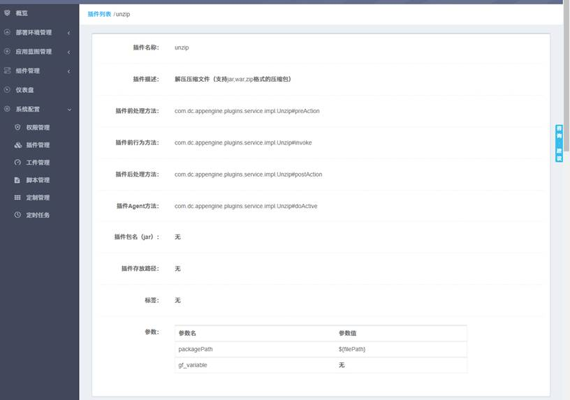

插件管理中可以添加、删除、查看详情、更新插件。如下图所示。
添加：
点击“添加”按钮时，如下图所示。需要填写插件名称、上传插件包（jar包）、填写插件方法（插件的全类名，类后面分别 加上#preAction、#invoke、#postAction、#agent），其他信息可选填。
详情：
点击“详情”，可查看插件的详情。如下图所示。

更新：
点击“更新”，可以更新插件的描述、方法、标签、参数等信息。如下图所示。
删除：
点击“删除”按钮可直接删除插件。
插件的配置和使用方式比较灵活，只有较好地把插件运用起来，才能设计出简单易用且健壮的过程。平台已有的插件配置使用说明请参考《操作参数说明》文档。